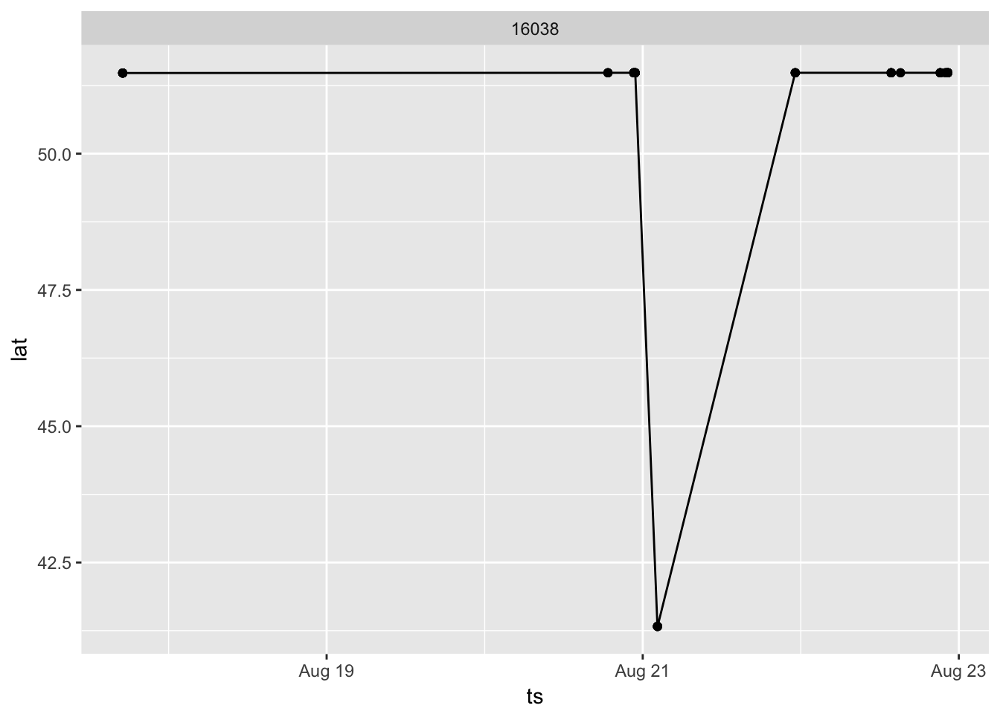

5 Cleaning data to remove false detections
Background radio noise will sometimes create false positives in your detection data. Some sites will inherently have more background noise than others, and some tag IDs are more prone to false positives than others. Once you download your data, the first step should be cleaning it of false detections. There are a few ways to do this, ultimately it is up to you to determine which detections are true and which should be removed. Below we outline a number of ways to determine if detections are likely false positives.
5.1 Load relevant R packages
library(devtools)
library(tidyverse)
library(motus)
library(lubridate)5.2 Removing detections outside of deployment range
A first step to removing definite false positives, is to remove any detections that fall outside of the tag deployment dates. To do this we will need to import the tagging metadata and merge it with the tag detection files to see tag deployment start/end dates.
Download tag deployment metadata: from the download page https://motus.org/data/downloads, select your project from the dropdown menu and click “Tag Deployments” to get a tag-deployments.csv file. Alternatively, you can download the same deployments file from your project tag page.
Import tag deployment metadata into R
tagMeta <- read.csv("./data/tag-deployments-jb.csv") ## replace the location with the file path where you saved the .csv file.
## rename columns
tagMeta <- rename(tagMeta, motusTagID = tagID, tagStart = tsStart, tagEnd = tsEnd)OR (we should probably go this way, and work from the .motus file)
1-2. Import tag deployment metadata from your .motus file To import and convert your tag metadata in your .motus file to a flat file (for more information see ‘Accessing Data’ chapter):
#t <- dplyr::src_sqlite("./data/project-38.motus") # import .motus file from your local directory (change directory to match)
#tagMeta <- tbl(t, "tagDeps") # extract tagDeps table, with tag deployment metadata
#tagMeta <- tagMeta %>% collect %>% as.data.frame # convert tag metadata to a flat file- Join tag metadata and detection data: Once you’ve created a flat .csv file of your data (see ‘Accessing Data’ Chapter), you can import using the following statement:
JBraw <- read.csv("./data/JB_sample_data_all.csv")Join the tagMeta database to your detection data, here we only include the start/end date columns from the tagMeta database, however you can choose to keep all columns if necessary.
JBraw <- dplyr::left_join(JBraw, select(tagMeta, tagDeployID, motusTagID, tagStart, tagEnd))- Remove detections that fall outside tag deployment dates
## first ensure that all times are in POSIXct
JBraw$ts <- as_datetime(JBraw$ts, tz = "UTC")
JBraw$tagStart <- as_datetime(JBraw$tagStart, tz = "UTC")
JBraw$tagEnd <- as_datetime(JBraw$tagEnd, tz = "UTC")
## subset to keep anything within tag deployment range, making sure to account for NAs in end dates
JBraw <- subset(JBraw, ts < tagEnd | is.na(tagEnd))
JBraw <- subset(JBraw, ts > tagStart)5.3 Removing detections based on visual geographic positions
A few simple plots of latitude/longitude vs. time can highlight detections that occur in areas outside of the expected geographic range of the species for that date, or flights showing impossible speeds over large distances. First, lets replace any instances with no GPS coordinates with the given locations from receiver deployment metadata:
## NEED TO ADD SCRIPT
## for now:
JBraw <- filter(JBraw, lat > 0)Now, lets make a simple plot
## make lat vs time plots of all tags
## now the data looks better and only tag 16038 looks odd
ggplot(JBraw, aes(ts, lat, group = motusTagID)) + geom_point() + geom_line() + facet_wrap(~motusTagID) Tag 16038 looks strange, so we can examine that detection period closer, and then remove any hitIDs we disagree with
Tag 16038 looks strange, so we can examine that detection period closer, and then remove any hitIDs we disagree with
## filter JBraw to only show motusTagID 16038, and only before 2015-10-01
ggplot(filter(JBraw, motusTagID == 16038 & ts < as.POSIXct("2015-10-01")), aes(ts, lat, group = motusTagID)) + geom_point() + geom_line() + facet_wrap(~motusTagID) It is highly unlikely/implausible that this bird travelled such a distance in one day, especially returning to the same receiver, but to confirm we can examine the signal strength of the potentially false detections.
## this time filter by motusTagID and by latitude so we only see the strange detections
ggplot(filter(JBraw, motusTagID == 16038 & lat < 42), aes(ts, sig, colour = as.factor(ant))) + geom_point() + facet_wrap(~motusTagID) It appears that there were only two detections at this receiver, both detections were captured by all 3 antennas, and they were over a minute apart. Since the burst rate of this tag is 6.09 seconds, we know that these are not consecutive detections. These detections are false positives. So lets identify the hitIDs so we can remove them later.
It appears that there were only two detections at this receiver, both detections were captured by all 3 antennas, and they were over a minute apart. Since the burst rate of this tag is 6.09 seconds, we know that these are not consecutive detections. These detections are false positives. So lets identify the hitIDs so we can remove them later.
## using a filter that will provide us with only the spurious detections:
filter(JBraw, motusTagID == 16038 & lat < 42)## X hitID runID batchID ts sig freqsd
## 1 3128 239875440 18377606 83952 2015-08-21 02:13:54 -64.8776 0.0183
## 2 3129 239875441 18377606 83952 2015-08-21 02:15:13 -65.1202 0.0188
## 3 3130 239875442 18377607 83952 2015-08-21 02:13:54 -55.2240 0.0240
## 4 3131 239875443 18377607 83952 2015-08-21 02:15:13 -55.2760 0.0121
## 5 3132 239875444 18377608 83952 2015-08-21 02:13:54 -52.0967 0.0470
## 6 3133 239875445 18377608 83952 2015-08-21 02:15:13 -51.6143 0.0127
## motusTagID ant runLen tagProjID id tagDeployID depLat depLon
## 1 16038 1 2 38 180 1826 51.4839 -80.45
## 2 16038 1 2 38 180 1826 51.4839 -80.45
## 3 16038 2 2 38 180 1826 51.4839 -80.45
## 4 16038 2 2 38 180 1826 51.4839 -80.45
## 5 16038 3 2 38 180 1826 51.4839 -80.45
## 6 16038 3 2 38 180 1826 51.4839 -80.45
## recvDeployID recv site projID antType
## 1 2566 SG-1215BBBK1163 Illini State Park 80 yagi-5
## 2 2566 SG-1215BBBK1163 Illini State Park 80 yagi-5
## 3 2566 SG-1215BBBK1163 Illini State Park 80 yagi-5
## 4 2566 SG-1215BBBK1163 Illini State Park 80 yagi-5
## 5 2566 SG-1215BBBK1163 Illini State Park 80 yagi-5
## 6 2566 SG-1215BBBK1163 Illini State Park 80 yagi-5
## antBearing spEN tagProj proj lat lon alt
## 1 110 Semipalmated Sandpiper JamesBay Shoener 41.3272 -88.74 156.8
## 2 110 Semipalmated Sandpiper JamesBay Shoener 41.3272 -88.74 156.8
## 3 85 Semipalmated Sandpiper JamesBay Shoener 41.3272 -88.74 156.8
## 4 85 Semipalmated Sandpiper JamesBay Shoener 41.3272 -88.74 156.8
## 5 230 Semipalmated Sandpiper JamesBay Shoener 41.3272 -88.74 156.8
## 6 230 Semipalmated Sandpiper JamesBay Shoener 41.3272 -88.74 156.8
## tagStart tagEnd
## 1 2015-08-17 10:30:00 <NA>
## 2 2015-08-17 10:30:00 <NA>
## 3 2015-08-17 10:30:00 <NA>
## 4 2015-08-17 10:30:00 <NA>
## 5 2015-08-17 10:30:00 <NA>
## 6 2015-08-17 10:30:00 <NA>We can see that the hitIDs we want to remove are 239875440 - 239875445. For now we will keep them in the data to continue looking for false positives. We will remove all of them together at the end of this chapter.
5.4 Removing detections based on estimated flight speed
By looking at the rate of movement between sites with consicutive detections, we can quickly view flights that are not physically possible. Further examination of these detections will be required to determine which detections are true and which are false. Rate of movement between sites can be determined using the siteTrans function in the motus R package. For instructions on installing the package, see chapter “Loading Packages”.
JBtrans <- siteTrans(JBraw) ## create new data.base consisting of transitions between consecutive sites for each tag
head(JBtrans)## # A tibble: 6 x 15
## # Groups: motusTagID, tagDeployID [1]
## motusTagID tagDeployID ts.x lat.x lon.x
## <int> <int> <dttm> <dbl> <dbl>
## 1 16037 1825 2015-08-17 17:02:39 51.4793 -80.4337
## 2 16037 1825 2015-08-28 16:40:18 51.4839 -80.4501
## 3 16037 1825 2015-09-08 01:10:13 51.2913 -80.1168
## 4 16037 1825 2015-09-08 18:37:16 44.5809 -65.7928
## 5 16037 1825 2015-09-13 19:46:27 39.0283 -74.8100
## 6 16037 1825 2015-09-14 15:56:49 37.1499 -75.9572
## # ... with 10 more variables: site.x <fctr>, ts.y <dttm>, lat.y <dbl>,
## # lon.y <dbl>, site.y <fctr>, tot_ts <time>, dist <dbl>, rate <dbl>,
## # bearing <dbl>, rhumbline_bearing <dbl>## so we see that tag 16047 has lots of high speeds due to close towers - 16038 has high speeds due to false detections
## same as what we saw with the plots, so lets remove those hitIDs
tmp <- filter(JBraw, !(hitID %in% c(239875440, 239875441, 239875442, 239875443, 239875444, 239875445)))The resulting database JBtrans shows information on the last detection at site x, and the first detection at site y. So in the above table, we can see the total time, distance, rate of movement, bearing, and rhumbline_bearing of potential flights between sites. Rate of movement is presented as m/s. Because rate of movement is based on receiver location at the time of last and first detection at two sites, it is only an estimation and sites closer together will have less accurate results. For example, lets look at row 58 from JBtrans:
JBtrans[58,]## # A tibble: 1 x 15
## # Groups: motusTagID, tagDeployID [1]
## motusTagID tagDeployID ts.x lat.x lon.x site.x
## <int> <int> <dttm> <dbl> <dbl> <fctr>
## 1 16047 1839 2015-10-26 11:27:54 42.488 -72.5376 MountToby
## # ... with 9 more variables: ts.y <dttm>, lat.y <dbl>, lon.y <dbl>,
## # site.y <fctr>, tot_ts <time>, dist <dbl>, rate <dbl>, bearing <dbl>,
## # rhumbline_bearing <dbl>It would appear that the bird is travelling at a rage of 2203.543 m/s (7,932 km/hr)! Based on rate alone you may think this is due to false detections, however the two sites are only 22km apart, and the time between detections was only 10 seconds. This high estimated rate of movement is likely due to the tag being detected at the edge of the detection range of both receivers; remember we do not know how far the tag is from the receiver location at time of detection. It’s therefore important to take all information into consideration when looking at high rates of movement. Let’s look at all cases of high rates of movements, we can be conservative and only look at rates > 50 m/s
filter(JBtrans, rate > 50)## # A tibble: 23 x 15
## # Groups: motusTagID, tagDeployID [2]
## motusTagID tagDeployID ts.x lat.x lon.x
## <int> <int> <dttm> <dbl> <dbl>
## 1 16038 1826 2015-08-20 22:51:11 51.4839 -80.4501
## 2 16047 1839 2015-10-26 11:19:40 42.6807 -72.4739
## 3 16047 1839 2015-10-26 11:19:49 42.6070 -72.7166
## 4 16047 1839 2015-10-26 11:19:59 42.6807 -72.4739
## 5 16047 1839 2015-10-26 11:20:28 42.6070 -72.7166
## 6 16047 1839 2015-10-26 11:20:48 42.6807 -72.4739
## 7 16047 1839 2015-10-26 11:21:17 42.6070 -72.7166
## 8 16047 1839 2015-10-26 11:21:46 42.6807 -72.4739
## 9 16047 1839 2015-10-26 11:21:55 42.6070 -72.7166
## 10 16047 1839 2015-10-26 11:22:34 42.6807 -72.4739
## # ... with 13 more rows, and 10 more variables: site.x <fctr>,
## # ts.y <dttm>, lat.y <dbl>, lon.y <dbl>, site.y <fctr>, tot_ts <time>,
## # dist <dbl>, rate <dbl>, bearing <dbl>, rhumbline_bearing <dbl>Almost all of these flights are between stations that are < 30 km apart so high rates of movement are not surprising. Only one flight had an impossible rate of movement with stations far apart:
filter(JBtrans, rate > 50 & dist > 40000)## # A tibble: 1 x 15
## # Groups: motusTagID, tagDeployID [1]
## motusTagID tagDeployID ts.x lat.x lon.x site.x
## <int> <int> <dttm> <dbl> <dbl> <fctr>
## 1 16038 1826 2015-08-20 22:51:11 51.4839 -80.4501 North Bluff
## # ... with 9 more variables: ts.y <dttm>, lat.y <dbl>, lon.y <dbl>,
## # site.y <fctr>, tot_ts <time>, dist <dbl>, rate <dbl>, bearing <dbl>,
## # rhumbline_bearing <dbl>Not surprisingly, this is the same tag we identified as having false positives when examining latitudinal plots above. We can confirm the hitID’s by making the same plots as above, or similar ones identifying site name:
ggplot(filter(JBraw, motusTagID == 16038), aes(ts, lat, col = as.factor(site))) + geom_point() We can see that the detections at Illini State Park are the spurious detections, so to determine their hitIDs we can filter by site:
We can see that the detections at Illini State Park are the spurious detections, so to determine their hitIDs we can filter by site:
filter(JBraw, motusTagID == 16038 & site == "Illini State Park ")## X hitID runID batchID ts sig freqsd
## 1 3128 239875440 18377606 83952 2015-08-21 02:13:54 -64.8776 0.0183
## 2 3129 239875441 18377606 83952 2015-08-21 02:15:13 -65.1202 0.0188
## 3 3130 239875442 18377607 83952 2015-08-21 02:13:54 -55.2240 0.0240
## 4 3131 239875443 18377607 83952 2015-08-21 02:15:13 -55.2760 0.0121
## 5 3132 239875444 18377608 83952 2015-08-21 02:13:54 -52.0967 0.0470
## 6 3133 239875445 18377608 83952 2015-08-21 02:15:13 -51.6143 0.0127
## motusTagID ant runLen tagProjID id tagDeployID depLat depLon
## 1 16038 1 2 38 180 1826 51.4839 -80.45
## 2 16038 1 2 38 180 1826 51.4839 -80.45
## 3 16038 2 2 38 180 1826 51.4839 -80.45
## 4 16038 2 2 38 180 1826 51.4839 -80.45
## 5 16038 3 2 38 180 1826 51.4839 -80.45
## 6 16038 3 2 38 180 1826 51.4839 -80.45
## recvDeployID recv site projID antType
## 1 2566 SG-1215BBBK1163 Illini State Park 80 yagi-5
## 2 2566 SG-1215BBBK1163 Illini State Park 80 yagi-5
## 3 2566 SG-1215BBBK1163 Illini State Park 80 yagi-5
## 4 2566 SG-1215BBBK1163 Illini State Park 80 yagi-5
## 5 2566 SG-1215BBBK1163 Illini State Park 80 yagi-5
## 6 2566 SG-1215BBBK1163 Illini State Park 80 yagi-5
## antBearing spEN tagProj proj lat lon alt
## 1 110 Semipalmated Sandpiper JamesBay Shoener 41.3272 -88.74 156.8
## 2 110 Semipalmated Sandpiper JamesBay Shoener 41.3272 -88.74 156.8
## 3 85 Semipalmated Sandpiper JamesBay Shoener 41.3272 -88.74 156.8
## 4 85 Semipalmated Sandpiper JamesBay Shoener 41.3272 -88.74 156.8
## 5 230 Semipalmated Sandpiper JamesBay Shoener 41.3272 -88.74 156.8
## 6 230 Semipalmated Sandpiper JamesBay Shoener 41.3272 -88.74 156.8
## tagStart tagEnd
## 1 2015-08-17 10:30:00 <NA>
## 2 2015-08-17 10:30:00 <NA>
## 3 2015-08-17 10:30:00 <NA>
## 4 2015-08-17 10:30:00 <NA>
## 5 2015-08-17 10:30:00 <NA>
## 6 2015-08-17 10:30:00 <NA>Once again we determine that we should remove hitID’s 239875440 - 239875445.
5.5 Removing false positives based on hitID’s
Now that we have a list of hitID’s that we have determined to be false positives, we can easily remove them from our database
JBfiltered <- filter(JBraw, !(hitID %in% c(239875440, 239875441, 239875442, 239875443, 239875444, 239875445)))5.6 Removing detections based on automated filtering
You can also remove spurious detections through some simple automated filters if you do not wish to examine each tag individually. But note that by applying a general filter to all your detections, you risk removing true detections as well. Detections can be filtered by freqsd or by runLen.
freqsd refers to the standard deviation of frequency offset among pulses in a burst, in kHz. Values larger than 0.1 kHz suggest a bogus detection, however this is for detections on SensorGnomes only.
runLen is the number of tag bursts in the current run, a run is defined as a group of consecutive detections of a tag detected on a receiver. If you decide to run these filters on your data, it is recommended that you identify the detections you would be removing and examine them to ensure you aren’t removing an unwanted amount of true detections.
## first convert freqsd to NA for all Lotek receivers
JBraw$freqsd <- ifelse(grepl("Lotek", JBraw$recv), "NA",JBraw$freqsd)
## identify which detections would be removed by creating a new column "filter"
JBraw$filter <- "KEEP"
JBraw$filter[JBraw$runLen <= 2 & JBraw$freqsd >= 0.1] <- "FILTER"Based on these filters, we can summarize how many detections would be removed based on tag, site, or receiver type:
## potential detections to filter by site
table(JBraw$filter, JBraw$site)##
## Assateague State Park BennettMeadow BISE Blandford Bombay Hook
## FILTER 0 0 4 0 0
## KEEP 6 27 40 2 121
##
## Brier2 BULL Comeau (Marshalltown) D'Estimauville FINWR
## FILTER 0 0 0 1 0
## KEEP 41 69 6 73 148
##
## Flamborough_Quarry FortRiver GWASS Hillman_Marsh Hogback
## FILTER 4 0 0 2 18
## KEEP 0 0 5 0 41
##
## Illini State Park Kamouraska Koffler Longridge LOOKSPT Machias
## FILTER 0 0 1 0 0 0
## KEEP 6 0 1 158 110 0
##
## Mount Thom MountToby Netitishi North Bluff NP mobile NWW Old Cut
## FILTER 0 2 0 3 0 4 12
## KEEP 0 6 2145 681 32 0 6
##
## Piskwamish Port Maitland Prime Hook Ruby's Sable West Light 2
## FILTER 0 0 0 0 28
## KEEP 224 42 82 0 25
##
## SBWL1 Shelburne Southwest Head St Denis Sur Mer Swallowtail TRUS
## FILTER 10 0 0 0 1 4
## KEEP 4 5 65 0 25 8Sable West Light 2, and Hogback seem to have relatively higher numbers of spurious detections, note that it didn’t filter out the false positives at Illini State Park
## potential detections to filter by motusTagID
table(JBraw$filter, JBraw$motusTagID)##
## 16035 16036 16037 16038 16039 16044 16047 16048
## FILTER 0 0 10 40 10 2 31 1
## KEEP 456 118 1342 122 1116 303 760 97motusTagID 16038 seems to have a higher number of spurious detections
From here it is a judgement call whether to filter based on freqsd or runLen, and how strict to make the filters. You may wish to apply them only to certain sites or certain tag IDs. There is a balance between removing all questionable detections along with some true detections, vs keeping all detections and potentially having some false positives. To filter based on the above criteria:
JBraw <- filter(JBraw, filter == "KEEP")Ultimately, how strictly you filter your detection data is up to each individual, but it is well worth your time to work through some or all of these methods to be confident in the accuracy of your detection data.